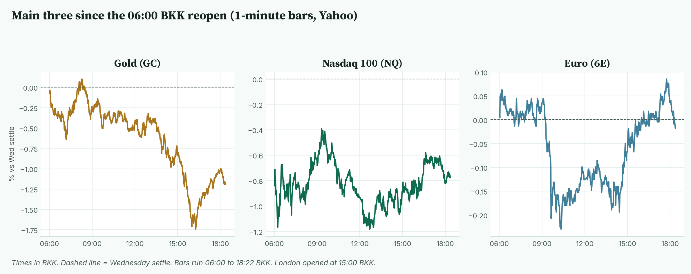
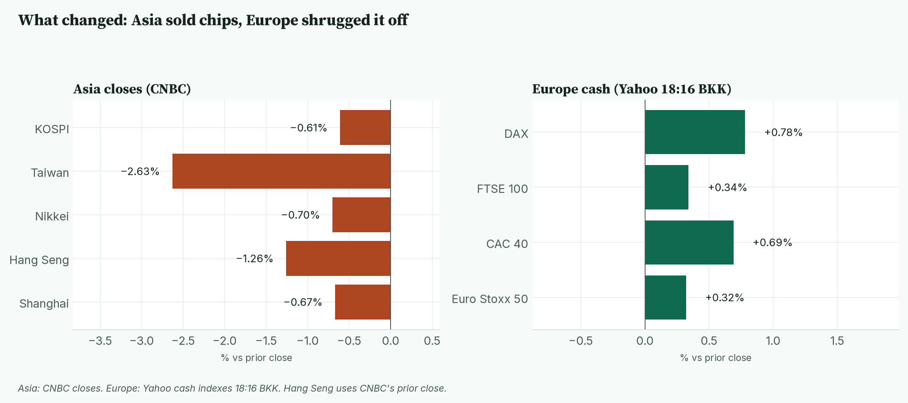
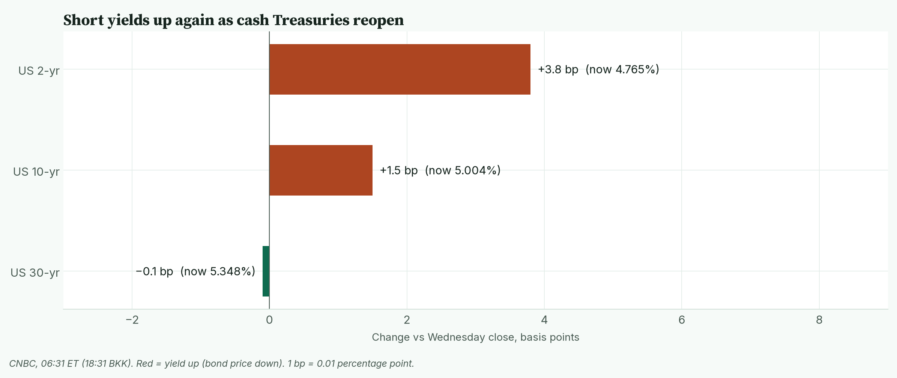
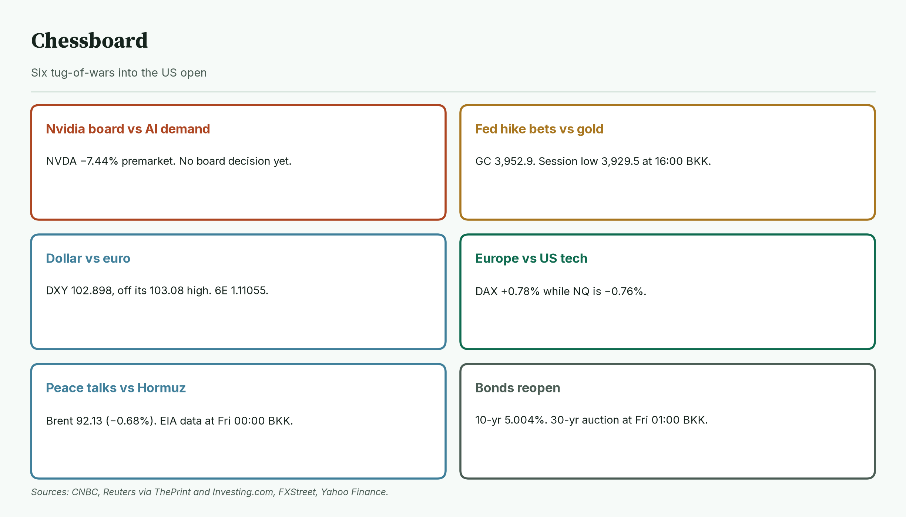
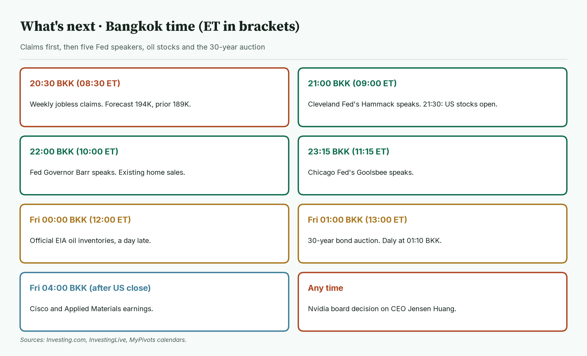
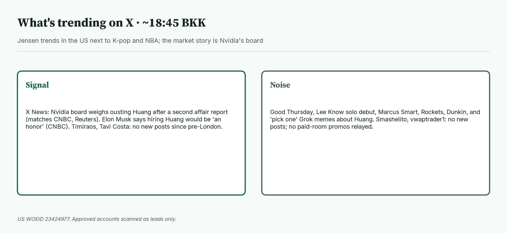

April · Market Intel, pre-NY · Thu Nov 12, 2026 · ~19:00 BKK / ~07:00 New York
Headline: Nvidia's board still hasn't ruled on Jensen Huang, and the stock is down 7.44% before the bell. Nasdaq futures are 28,256.50 (−0.76%), up off their lows. Gold futures fell to 3,952.9 (−1.19%) on Fed hike bets. Euro futures are flat at 1.11055 (−0.01%). Jobless claims at 20:30 BKK, as cash bonds reopen, and any Nvidia board news decide the session.
So what: Nasdaq is waiting on one boardroom. Gold is paying for a near-certain December Fed hike, and some traders now talk about a bigger one.
 Caption: Futures at 18:21 BKK versus Wednesday's settle. Gold is the weakest of the three. The VIX is up while stocks drift lower.
Caption: Futures at 18:21 BKK versus Wednesday's settle. Gold is the weakest of the three. The VIX is up while stocks drift lower.
1) Main instruments The three main contracts since the 06:00 BKK reopen, as a % move from Wednesday's settle. Gold slid into 16:00 BKK and bounced. The euro recovered its morning drop. |
 Caption: The three main contracts since the 06:00 BKK reopen, as a % move from Wednesday's settle. Gold slid into 16:00 BKK and bounced. The euro recovered its morning drop.
(Quotes are CNBC futures at 18:21 BKK (06:21 New York), matching the Yahoo Finance feed. Session highs and lows use Yahoo 1-minute bars from the 06:00 BKK CME reopen (18:00 New York Wednesday).)
Caption: The three main contracts since the 06:00 BKK reopen, as a % move from Wednesday's settle. Gold slid into 16:00 BKK and bounced. The euro recovered its morning drop.
(Quotes are CNBC futures at 18:21 BKK (06:21 New York), matching the Yahoo Finance feed. Session highs and lows use Yahoo 1-minute bars from the 06:00 BKK CME reopen (18:00 New York Wednesday).)
- Gold futures (GC, Dec): 3,952.9, −1.19%, at 18:21 BKK. Driver: a firm dollar and bets on a December Fed hike. CME FedWatch shows 89% odds of a quarter-point hike and 11% for a half-point (CNBC). Wednesday's settle was 4,000.5. Today's range is 3,929.5 (16:00 BKK) to 4,005.9 (08:19 BKK). Spot gold is 3,947.79, −0.99% (CNBC, 18:31 BKK), after touching its lowest since Nov 4 (CNBC).
- Nasdaq 100 futures (NQ, Dec): 28,256.50, −0.76%, at 18:21 BKK. Driver: Nvidia's board met late Wednesday on whether to remove Huang, and no outcome has been announced (CNBC, Reuters). Wednesday's settle was 28,473.25. Today's range is 28,131.75 (06:15 BKK) to 28,368.75 (09:20 BKK). It is back in the middle.
- Euro futures (6E, Dec): 1.11055, −0.01%, at 18:21 BKK. Driver: the dollar eased off its 19-month high. DXY touched 103.08 (FXStreet). Wednesday's settle was 1.11065. Today's range is 1.10805 (09:39 BKK) to 1.11165 (17:45 BKK). Spot euro is 1.1089, unchanged (CNBC, 18:31 BKK).
- Takeaway: gold is the loser since London. Nasdaq has climbed off its low. The euro has erased its morning drop.
Context. The dollar index (DXY, the dollar against six major currencies) is 102.898, −0.01% (CNBC, 18:31 BKK). The 10-year US yield (what the US government pays to borrow for 10 years) is 5.004%, up 1.5 basis points (CNBC, 18:31 BKK; a basis point is 0.01 percentage point). The VIX (the "fear gauge" built from S&P 500 option prices) is 18.32, +4.75% (CNBC, 18:31 BKK). US oil (CL, December) is 85.85, −0.79% (18:21 BKK). S&P 500 futures (ES) are 7,612.25, −0.37% (18:21 BKK). Bitcoin is $73,104, −1.88% versus CNBC's previous close (CNBC/Coin Metrics, 18:31 BKK).
2) Top signals Asia sold chip stocks on the Nvidia news. Europe opened higher anyway, led by the DAX. |
 Caption: Asia sold chip stocks on the Nvidia news. Europe opened higher anyway, led by the DAX.
Caption: Asia sold chip stocks on the Nvidia news. Europe opened higher anyway, led by the DAX.
- Nvidia is down 7.44% premarket at 160.81 (Yahoo Finance, 18:31 BKK). CoreWeave is −7.68%.
- Wall Street analysts are cutting targets. Bernstein cut its Nvidia target to $200 from $400. Baird cut to $200 from $500. Morgan Stanley dropped it from its Top Pick list (CNBC).
- A second report deepens the story. The New York Times reported a second affair, with an Nvidia executive (CNBC, The Guardian).
- Europe is green. DAX +0.78%, CAC 40 +0.69%, FTSE 100 +0.34% (Yahoo, 18:16 BKK).
- Takeaway: the selling is in AI names, not in stocks as a whole.
3) Rates, FX and oil Cash Treasuries trade again after Veterans Day. The 2-year leads the rise, which is the Fed-hike bet in one number. |
 Caption: Cash Treasuries trade again after Veterans Day. The 2-year leads the rise, which is the Fed-hike bet in one number.
Caption: Cash Treasuries trade again after Veterans Day. The 2-year leads the rise, which is the Fed-hike bet in one number.
- CNBC, 18:31 BKK: 2-year 4.765% (+3.8 bp), 10-year 5.004% (+1.5 bp), 30-year 5.348% (−0.1 bp).
- Fed pricing: MUFG says markets price about 28 bp of hikes by December and 43 bp by January (FXStreet). That means a second quarter-point hike early next year is mostly priced in.
- Mentor: the 2-year tracks where traders think the Fed goes next. When it rises faster than the 30-year, the market is betting on near-term hikes.
- Yen. USD/JPY is 159.67 (CNBC, 18:31 BKK), still just under the 160 level where Japan stepped in this summer.
- Oil. January Brent is 92.13, −0.68% (CNBC, 18:21 BKK). WTI's session range is 85.20 to 87.54. Hopes for Iran and Ukraine peace talks weigh on prices (CNBC).
- Takeaway: higher short-term yields are the main weight on gold today.
4) Why it matters
Nvidia is roughly a $4 trillion company (Reuters via CNA), so its CEO question moves the whole Nasdaq.
- Huang has no obvious successor and owns about 3.6% of the stock (Reuters via ThePrint).
- Under Nvidia's bylaws, a majority of its 11 directors can remove him "with or without cause" (Reuters via ThePrint).
- Bloomberg reported the board has worked with an outside firm on possible replacements (via Reuters).
- Nvidia reports earnings on Nov 17 (Motley Fool, per this morning's brief).
- Mentor: this is "key-person risk," when a company's value depends heavily on one leader. Markets price it fast and often overshoot.
- Takeaway: a decision either way removes uncertainty. A messy one adds to it.
5) Chessboard Six tug-of-wars into the US open. Nvidia and the Fed path move the main three fastest. |
 Caption: Six tug-of-wars into the US open. Nvidia and the Fed path move the main three fastest.
Caption: Six tug-of-wars into the US open. Nvidia and the Fed path move the main three fastest.
- Nvidia board vs AI demand. NVDA −7.44% premarket, with no decision announced.
- Fed hike bets vs gold. GC 3,952.9, after a 3,929.5 low at 16:00 BKK.
- Dollar vs euro. DXY 102.898, off its 103.08 high. 6E 1.11055.
- Europe vs US tech. DAX +0.78% while NQ is −0.76%.
- Peace talks vs Hormuz. Brent 92.13. Official oil data is due at Fri 00:00 BKK.
- Bonds reopen. 10-year 5.004%. The 30-year auction is at Fri 01:00 BKK.
- Takeaway: the US session is packed with scheduled risk, on top of the Nvidia wildcard.
6) Leading indicators (BKK times) Claims first, then a run of Fed speakers, oil stocks and the 30-year auction. Nvidia news can land at any time. |
 Caption: Claims first, then a run of Fed speakers, oil stocks and the 30-year auction. Nvidia news can land at any time.
Caption: Claims first, then a run of Fed speakers, oil stocks and the 30-year auction. Nvidia news can land at any time.
- 20:30: weekly jobless claims (8:30 AM ET). Forecast 194K, prior 189K (Investing.com).
- 21:00: Cleveland Fed's Hammack (9:00 AM ET). 21:30: US stocks open.
- 22:00: Fed Governor Barr and existing home sales (10:00 AM ET).
- 23:15: Chicago Fed's Goolsbee (11:15 AM ET) (InvestingLive, MyPivots).
- Fri 00:00: official EIA oil inventories (12:00 PM ET), a day late.
- Fri 01:00: 30-year bond auction (1:00 PM ET). Daly speaks at 01:10.
- Fri 04:00: Cisco and Applied Materials earnings, after the US close.
- Already out: UK GDP rose 0.7% in the third quarter, as expected (ONS).
- Levels to watch: GC 3,929.5 and 4,005.9. NQ 28,131.75 and 28,368.75. 6E 1.10805 and 1.11165. DXY 103.08. WTI 85.20.
- Takeaway: claims and the bond reopen decide gold and the euro. Nvidia decides Nasdaq.
7) Undercovered
- AI is lifting UK growth. Information and communication grew 2.1% in the quarter, and the ONS ties the biggest gains to AI and cloud firms (CNBC).
- A Bank of England hike stays in play. Analysts say the GDP data keeps a December rise "firmly on the table" (CNBC).
- Washington is watching Nvidia's China sales. Sen. Elizabeth Warren's office asked the administration to preserve documents on Nvidia's AI chip exports to China (CNBC).
- Prediction markets moved first. Polymarket showed an 88% chance Huang leaves by year-end, as of Wednesday's Reuters report.
8) What's trending on X (~18:45 BKK) Jensen is the clear market name in the US top 20. The rest is K-pop, NBA and morning greetings. |
 Caption: Jensen is the clear market name in the US top 20. The rest is K-pop, NBA and morning greetings.
Caption: Jensen is the clear market name in the US top 20. The rest is K-pop, NBA and morning greetings.
- US: Jensen, Marcus Smart, Rockets, LEE KNOW SOLO DEBUT, Dunkin.
- Signal: X News on the Nvidia board matches CNBC and Reuters. Elon Musk said hiring Huang would be "an honor" (CNBC).
- Lead: X News on Nvidia's Singapore revenue reporting says Nvidia changed how it reports sales by region. I have not checked its figures, so treat it as a lead.
- Approved accounts: Nick Timiraos, Tavi Costa, Smashelito and vwaptrader1 had no new posts since the pre-London brief. No JJ / vwaptrader1 paid-room promos relayed.
- Noise: "Good Thursday," K-pop, NBA, and meme posts asking Grok to "pick" for Huang.
Bottom line: Nasdaq waits on a boardroom, gold pays for the Fed. For Jim: Nasdaq at 28,256.50 sits inside 28,131.75 to 28,368.75. Gold at 3,952.9 sits above its 3,929.5 low; 4,005.9 is the ceiling. The euro at 1.11055 sits inside 1.10805 to 1.11165. Interpretive note: a board decision could push Nasdaq through either edge, and a hot claims print would add to gold's pressure. Those are possible paths, not forecasts. 🔮 Interpretive, not data: Thursday is Jupiter's day in old almanacs, the planet of rulers and verdicts. Symbol, not signal.
Confidence: Futures levels: high (CNBC, matching Yahoo). Session ranges: Yahoo 1-minute bars from 06:00 BKK. Yields, DXY, VIX, spot gold, spot euro, yen, Bitcoin, Brent, Asia closes: CNBC, time-stamped. Europe: Yahoo. Nvidia and CoreWeave premarket: Yahoo Finance, 18:31 BKK. Fed odds: CME FedWatch via CNBC. News: CNBC, Reuters via ThePrint and Investing.com, The Guardian, FXStreet, ONS, Investing.com, InvestingLive, MyPivots. X posts: leads only.
Charts: /workspace/april-charts/2026-11-12/pre-ny-{scoreboard,main3,asia,rates,chess,leading,xsplit}.png |